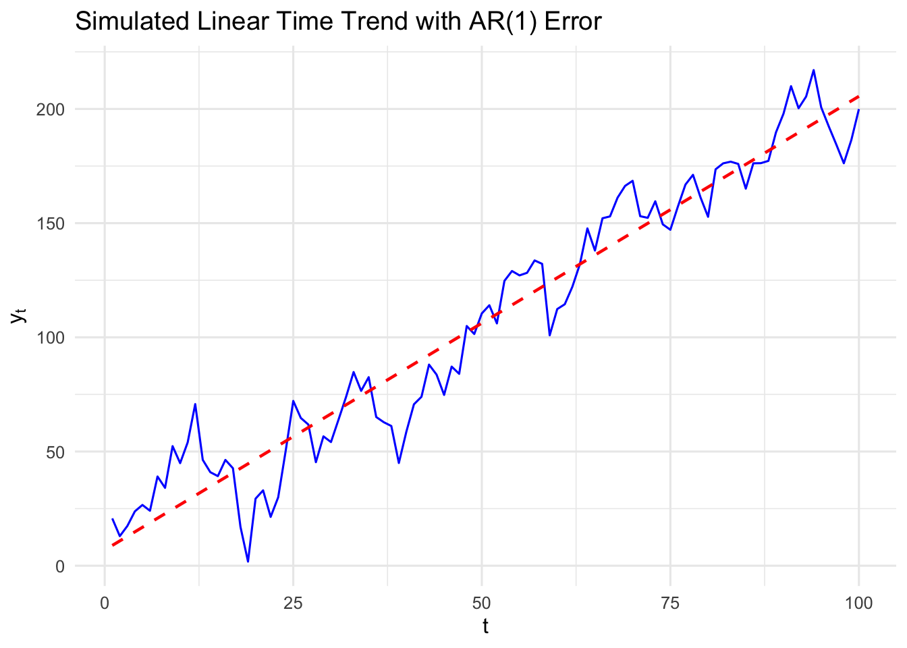
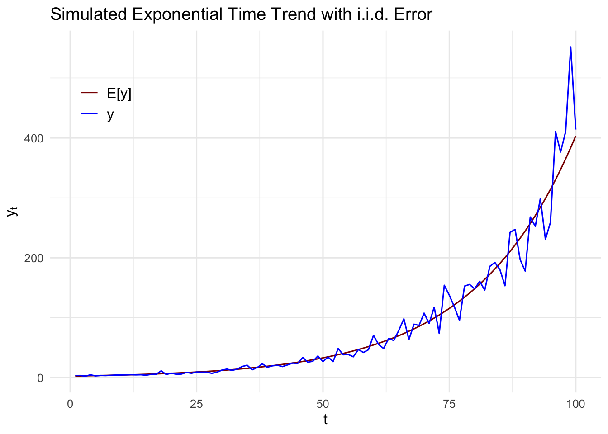

17 Spurious Regression
17.1 Trending Time Series
It is important to characterize if some series contain a time trend in order to draw causual inference using time series data. Ignoring the fact that two sequences are trending in the same or opposite directions can lead us to falsely conclude that changes in one variable are actually caused by changes in another variable. In many cases, two time series processes appear to be correlated only because they are both trending over time for reasons related to other unobserved factors.
The phenomenon of finding a relationship between two or more trending variables simply because each is growing over time is an example of a spurious regression problem. We can add a time trend to account for the trend in explained or explanatory variables.
17.1.1 Linear time trend
If \(\{y_t\}\) has a linear time trend, then we can formulate the series as
\[ y_t = \alpha_0 + \alpha_1 t + e_t, \; t=1, 2, \ldots, \] where \(e_t\sim iid (0, \sigma^2_e)\) or a more realistic characterization allows \(\{e_t\}\) to be correlated over time.
Figure 17.1 shows a simulated series with a linear time trend. The values of \(y_t\) do not fall exactly on the line in due to randomness, but the expected values are on the line:
\[ \E(y_t) = \alpha_0 + \alpha_1 t . \]
17.1.2 Exponential trend
When a series has the same average growth rate from period to period, we say that the time series has an exponential trend.
I practice, an exponential trend in a time series is captured by modelling the natural logarithm of the series as linear trend (assuming that \(y_t>0\)):
\[ \log (y_t) = \beta_0 + \beta_1 t + e_t, \; t=1, 2, \ldots. \tag{17.1}\]
Recall that, for small changes, \(\Delta \log(y_t) = \log(y_t) - \log(y_{t-1})\) is approximately the proportionate change in \(y_t:\)
\[ \beta_1 = \Delta \log(y_t) \approx \frac{y_t-y_{t-1}}{y_{t-1}} \]
\(\beta_1\) is interpreted as the growth rate in \(y\) from period \(t-1\) to period \(t\). In other words, \(\beta_1\) is approximately the average per period growth rate in \(y_t.\)
For example, if \(t\) denotes year and \(\beta_1 = .027,\) then \(y_t\) grows about 2.7% per year on average.
Exponentiating (17.1) shows that \(y_t\) itself has an exponential trend:
\[ y_t = \exp (\beta_0 + \beta_1 t + e_t) . \]

Figure 17.2 show a simulated time series with an exponential trend. In the early years, we see that the change in \(y_t\) over each year is relatively small, whereas the change increases as time passes. This is consistent with a constant average growth rate: the percentage change is roughly the same in each period.
17.2 Using Trending Variables in Regression Analysis
For concreteness, consider a model where two observed factors, \(x_{t1}\) and \(x_{t2}\), affect \(y_t\). In addition, there are unobserved factors that are systematically growing or shrinking over time. A model that captures this is
\[ y_t = \beta_0 + \beta_1x_{t1} + \beta_2x_{t2} + \beta_3t + u_t . \tag{17.2}\] This fits into the multiple linear regression framework with \(x_{t3}=t.\)
Allowing for the trend \(t\) in this equation explicitly recognizes that \(y_t\) may be growing (\(\beta_3>0\)) or shrinking (\(\beta_3<0\)) over time for reasons essentially unrelated to \(x_{t1}\) and \(x_{t2}.\) Omiiting \(t\) from the regression and regressing \(y_t\) on \(x_{t1}\) and \(x_{t2}\) will generally yield biased estimators of \(\beta_1\) and \(\beta_2.\) This is especially true if \(x_{t1}\) and \(x_{t2}\) are themselves trending, because they can then be highly correlated with \(t.\)
Frisch–Waugh–Lovell theorem Interpretation
Based on the Frisch–Waugh–Lovell theorem, Equation 17.2 can have an alternative interpretation in terms of detrending the original data series before using them in regression analysis.
\(\hat{\beta}_1\) and \(\hat{\beta}_2\) can be obtained in a two-step procedure as follows.
Regress each of \(y_t\), \(x_{1t}\), and \(x_{2t}\) on a constant and the time trend \(t\) and save the residuals, say, \(\ddot{y}_t\), \(\ddot{x}_{1t}\), \(\ddot{x}_{2t}\), \(t = 1, 2, \ldots, T\).
For example,
\[ \ddot{y}_t = y_t - \hat{\alpha}_0 - \hat{\alpha}_1 t. \]
Thus, we can think of \(\ddot{y}_t\) as being linearly detrended. In detrending \(y_t\), we have estimated the model
\[ y_t = \alpha_0 + \alpha_1 t + e_t \]
by OLS; the residuals from this regression, \(\hat{e}_t = \ddot{y}_t\), have the time trend removed (at least in the sample). A similar interpretation holds for \(\ddot{x}_{1t}\) and \(\ddot{x}_{2t}\).
Any potential trends in the dependent and independent variables were removed by now.
Run the regression of \[ \ddot{y}_t \text{ on } \ddot{x}_{1t}, \ddot{x}_{2t}. \] (No intercept is necessary, but including an intercept affects nothing: the intercept will be estimated to be zero.) This regression exactly yields \(\hat{\beta}_1\) and \(\hat{\beta}_2\) from (17.2).
This means that the estimates of primary interest, \(\hat{\beta}_1\) and \(\hat{\beta}_2\), can be interpreted as coming from a regression without a time trend, but where we first detrend the dependent variable and other independent variables. The same conclusion holds with any number of independent variables and if the trend is quadratic or of some other polynomial degree.
If \(t\) is omitted from (17.2), then no detrending occurs, and \(y_t\) might seem to be related to one or more of the \(x_{jt}\) simply because each contains a trend. If the time trend is statistically significant, and the results change in important ways when a time trend is added to a regression, then the initial results without a trend should be treated with suspicion.
The interpretation of \(\hat{\beta}_1\) and \(\hat{\beta}_2\) shows that it is a good idea to include a trend in the regression if any independent variable is trending, even if \(y_t\) is not. If \(y_t\) has no noticeable trend, but, say, \(x_{1t}\) is growing over time, then excluding a trend from the regression may make it look as if \(x_{1t}\) has no effect on \(y_t\), even though movements of \(x_{1t}\) about its trend may affect \(y_t\). This will be captured if \(t\) is included in the regression.
Time series exhibiting a time trend can have seasonal patterns as well, in which case we should estimate a regression model with a time trend and seasonal dummy variables. The seasonal dummies should be one less than the distinct seasonal patterns. For example, if we observe quarterly differences, we may introduce three seasonal dummies, the one left out would be the base level, represented by the intercept. The regressions can then be interpreted as regressions using both detrended and deseasonalized series.
17.3 Computing R-Squared when the Dependent Variable Is Trending
R-squareds in time series regressions are often very high, especially compared with typical R-squareds for cross-sectional data. Does this mean that we learn more about factors affecting \(y\) from time series data? Not necessarily. On one hand, time series data often come in aggregate form (such as average hourly wages in the U.S. economy), and aggregates are often easier to explain than outcomes on individuals, families, or firms, which is often the nature of cross-sectional data. But the usual and adjusted \(R\)-squareds for time series regressions can be artificially high when the dependent variable is trending.
Remember that \(R^2\) is a measure of how large the error variance is relative to the variance of \(y\). The formula for the adjusted \(R\)-squared shows this directly:
\[ \bar{R}^2 = 1 - (\hat{\sigma}_u^2 / \hat{\sigma}_y^2), \]
where \(\hat{\sigma}_u^2\) is the unbiased estimator of the error variance, \(\hat{\sigma}_y^2 = \text{SST}/(n - 1)\), and \(\text{SST} = \sum_{t=1}^n (y_t - \bar{y})^2\). Now, estimating the error variance when \(y_t\) is trending is no problem, provided a time trend is included in the regression. However, when \(E(y_t)\) follows, say, a linear time trend, \(\text{SST}/(n - 1)\) is no longer an unbiased or consistent estimator of \(\text{Var}(y_t)\). In fact, \(\text{SST}/(n - 1)\) can substantially overestimate the variance in \(y_t\), because it does not account for the trend in \(y_t\).
When the dependent variable satisfies linear, quadratic, or any other polynomial trends, it is easy to compute a goodness-of-fit measure that first nets out the effect of any time trend on \(y_t\). The simplest method is to compute the usual \(R\)-squared in a regression where the dependent variable has already been detrended. For example, if the model is \[ y_t = \beta_0 + \beta_1x_{t1} + \beta_2x_{t2} + \beta_3t + u_t , \] then we first detrend \(y_t\) by regressing \(y_t\) on \(t\):
\[ y_t = \alpha_0 + \alpha_1 t + e_t \tag{17.3}\] and obtain the residuals \(\hat{e}_t = \ddot{y}_t\). Then, we regress \(\ddot{y}_t\) on \(x_{t1},\) \(x_{t2},\) and \(t\):
\[ \ddot{y}_t = \beta_0 + \beta_1 x_{t1} + \beta_2 x_{t2} + \beta_3 t + u_t . \]
The \(R\)-squared from this regression is
\[ R^2 = 1 - \frac{\text{SSR}}{\sum_{t=1}^n \ddot{y}_t^2}, \tag{17.4}\]
where SSR is identical to the sum of squared residuals from \[ \hat{y}_t = \hat{\beta}_0 + \hat{\beta}_1x_{t1} + \hat{\beta}_2x_{t2} + \hat{\beta}_3t . \tag{17.5}\]
Since \(\sum_{t=1}^n \ddot{y}_t^2 \leq \sum_{t=1}^n (y_t - \bar{y})^2\) (and usually the inequality is strict), the \(R\)-squared from (17.4) is no greater than, and usually less than, the \(R\)-squared from (17.5). (The sum of squared residuals is identical in both regressions.) When \(y_t\) contains a strong linear time trend, (17.4) can be much less than the usual \(R\)-squared.
The R-squared in (17.4) better reflects how well \(x_{t1}\) and \(x_{t2}\) explain \(y_t\) because it nets out the effect of the time trend.
An adjusted R-squared can also be computed based on (17.4).
\[ \overline{R}^2 = 1 - \frac{\text{SSR}/(n-K)}{\sum_{t=1}^n \ddot{y}_t^2 / (n-p)}, \] where \(K\) is the \(df\) in the usual regression (17.5) (that includes any time trends), and \(p\) is the number of trend parameters estimated in detrending \(y_t.\)
In our example model (17.2), we divide \(SSR\) by \((n-4)\) and divide \(\sum_{t=1}^n \ddot{y}_t^2\) by \((n-2),\) as there are two trend parameters estimated in detrending \(y_t\) (17.3).
17.4 I(1) process
When we are dealing with integrated processes of order one, there is an additional complication. Even if the two series have means that are not trending, a simple regression involving two independent \(\mathrm I(1)\) series will often result in a significant \(t\) statistic. To be more precise, let \(\{x_t\}\) and \(\{y_t\}\) be random walks generated by
\[ x_t = x_{t-1} + a_t, \; t=2,3,\ldots, \] and \[ y_t = y_{t-1} + e_t, \; t=2,3,\ldots, \] where \(\{a_t\}\) and \(\{e_t\}\) are iid innovations, with mean zero and variances \(\sigma^2_a\) and \(\sigma^2_e,\) respectively.
Assume further that \(\{a_t\}\) and \(\{e_t\}\) are independent processes. This implies that \(\{x_t\}\) and \(\{y_t\}\) are also independent. But if we run the simple regression
\[ y_t = \beta_0 + \beta_1 x_t + u_t \] and obtain the usual \(t\) statistic for \(\hat{\beta}_1\) and the usual R-squared, the results cannot be interpreted as if the variables are stationary (\(\mathrm I(1)\)).
The \(t\) statistic will be significant a large percentage of the time, much larger than the nominal significance level. \(\rightarrow\) This is called the spurious regression problem, where \(y_t\) and \(x_t\) are independent, but an OLS regression indicates a significant \(t\) statistic.
For the \(t\) statistic of \(\hat{\beta}_1\) to have an approximate standard normal distribution in large samples, at a minimum, \(\{u_t\}\) should be a mean zero, serially uncorrelated process. But under \[ \mathrm H_0: \beta_1=0, y_t = \beta_0 + u_t \] the assumption was violated.
To see this, we assume the initial value \(y_1=0\), then under \(\mathrm H_0\) we have \(\beta_0=0,\) and \[ u_t = y_t = \sum_{j=1}^t e_j. \] In other words, \(\{u_t\}\) is a random walk under \(\mathrm H_0\) which clearly violate even the asymptotic version of the Gauss-Markov assumptions.
Including a time trend does NOT change the conclusion. If \(y_t\) or \(x_t\) is a random walk with drift and a time trend is NOT included, then spurious regression problem is even worse.
The behavior of R-squared is nonstandard.
In regressions with \(\mathrm I(0)\) time series variables, the R-squared converges in probability to the population R-squared: \(1-\sigma^2_u/\sigma^2_y.\)
But in regressions with \(\mathrm I(1)\) processes, rather than the R-squared having a well-defined plim, it actually converges to a random variable. Formalizing this notion is well beyond the scope of this text.
The implication is that the R-squared is large with high probability, even though \(y_t\) and \(x_t\) are independent time series processes.
The same considerations arise with multiple independent variables, each of which may be \(\mathrm I(1)\) or some of which may be \(\mathrm I(0)\). If \(y_t\) is \(\mathrm I(1)\) and at least some of the explanatory variables are \(\mathrm I(1)\), the regression results may be spurious.
This does not mean that regressions involving any \(\mathrm I(1)\) process are problematic. There are remedies for using the \(\mathrm I(1)\) processes:
The first difference of an \(\mathrm I(1)\) process can be used to transform it to be weakly dependent (and often stationary).
Regressing an \(\mathrm I(1)\) dependent variable on an \(\mathrm I(1)\) independent variable can be informative, but only if these variables are related in a precise sense – Cointegration.